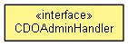

org.eclipse.emf.cdo.server.spi.admin
Interface CDOAdminHandler
- public interface CDOAdminHandler

Handles requests from server-side CDOAdmin instances to create or
delete repositories.
A handler can be contributed by registering
a factory with the managed container.
- Since:
- 4.1
getType
String getType()
createRepository
IRepository createRepository(String name,
Map<String,Object> properties)
deleteRepository
void deleteRepository(IRepository delegate)
Copyright (c) 2011, 2012 Eike Stepper (Berlin, Germany) and others.